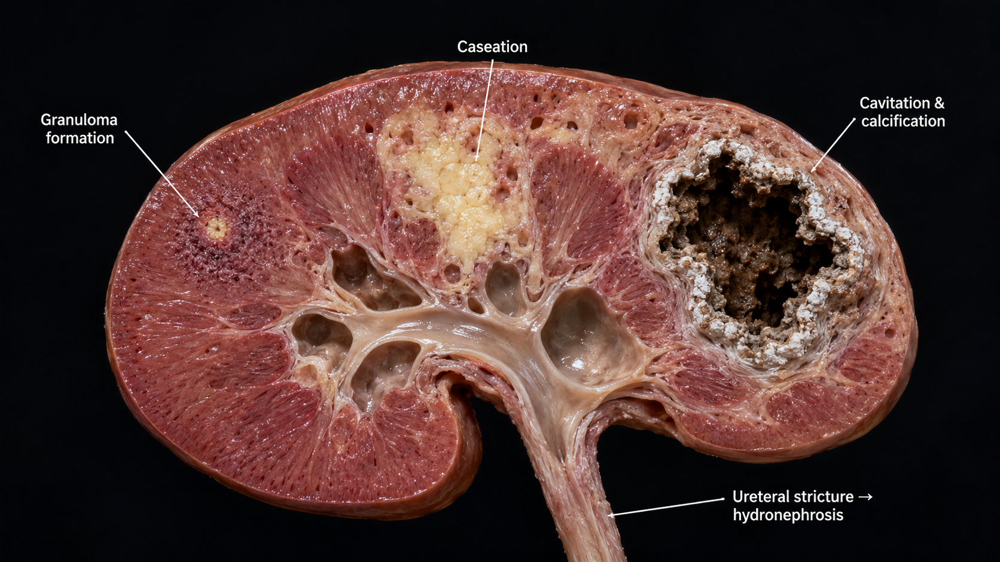
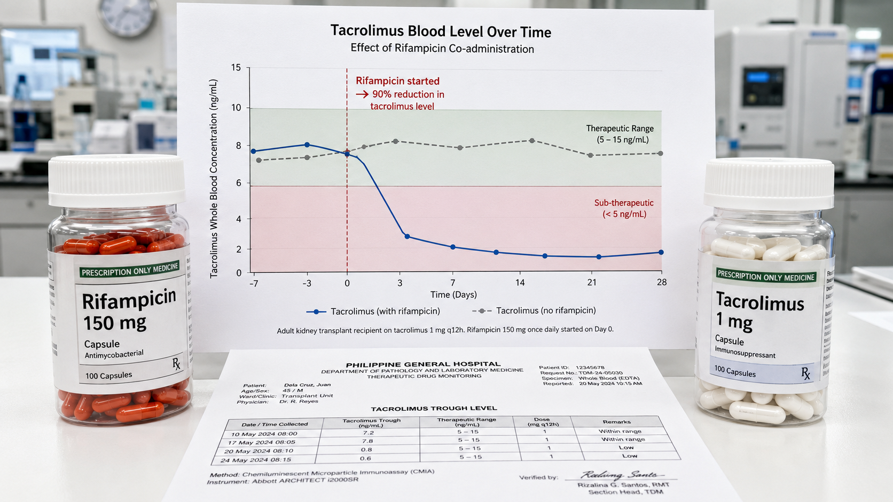
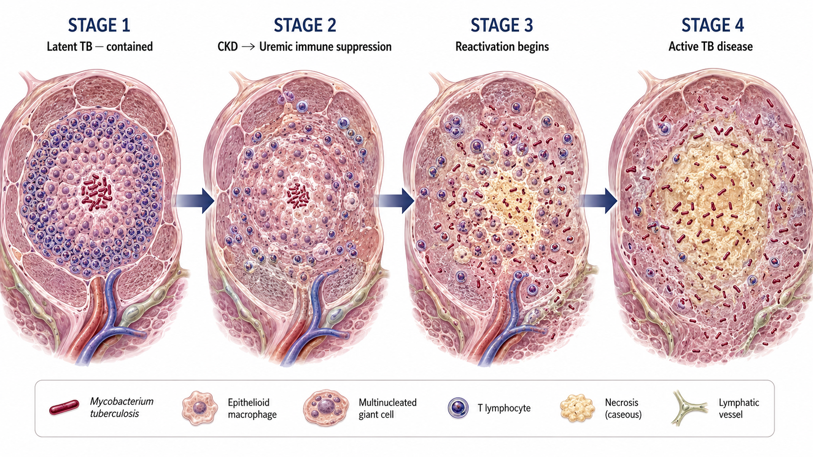

Why TB and Kidney Disease Are So Closely Linked in the PhilippinesBakit Napakalapit na Magkaugnay ang TB at Sakit sa Bato sa PilipinasNgano Hapit Kaayo nga Nagkalabot ang TB ug Sakit sa Kidney sa Pilipinas
The Philippines ranks among the top 10 countries worldwide for TB burden — with an estimated 800+ cases per 100,000 population annually. CKD patients have 6–25× higher TB risk than the general population due to uremia-driven immune suppression, malnutrition, and the shared risk factors of poverty and overcrowding. For dialysis and transplant patients, TB is a potentially fatal but preventable and treatable complication that requires heightened vigilance.Ang Pilipinas ay kabilang sa mga nangungunang 10 bansa sa buong mundo para sa pasanin ng TB — na may tinantyang 800+ kaso bawat 100,000 populasyon taun-taon. Ang mga pasyenteng may CKD ay may 6–25× na mas mataas na panganib ng TB kaysa sa pangkalahatang populasyon dahil sa uremia-driven immune suppression, malnutrisyon, at mga karaniwang salik ng panganib ng kahirapan at siksikan. Para sa mga pasyenteng nasa dialysis at may transplant, ang TB ay isang potensyal na nakamamatay ngunit mapipigilan at magagamot na komplikasyon na nangangailangan ng mas mataas na pagmamatyag.Ang Pilipinas naa sa mga nangungunang 10 nasod sa tibuok kalibutan alang sa pasanin sa TB — nga adunay tinanggal nga 800+ ka kaso matag 100,000 populasyon matag tuig. Ang mga pasyente nga adunay CKD adunay 6–25× nga mas taas nga risgo sa TB kaysa sa kinatibuk-an nga populasyon tungod sa uremia-driven immune suppression, malnutrisyon, ug mga karaniwang salik sa risgo sa kakabus ug siksikan. Alang sa mga pasyente sa dialysis ug adunay transplant, ang TB usa ka potensyal nga nakamamatay apan mapugngan ug matambalan nga komplikasyon nga nanginahanglan ug mas taas nga pagbantay.
Most TB in CKD patients is reactivation of latent TB acquired years or decades earlier — not new infection. The declining immunity of advancing CKD unmasks TB that the immune system had previously contained. In the Philippines, most adults have been exposed to TB — making screening essential in all CKD patients.Ang karamihan ng TB sa mga pasyenteng may CKD ay pagbabalik ng latent TB na nakuha noong nakaraan — hindi bagong impeksyon. Ang bumababang immunity ng sumusulong na CKD ay nagtitanggal ng TB na dati ay naipigil ng immune system. Sa Pilipinas, karamihan ng mga matatanda ay nalantad sa TB — na ginagawang mahalaga ang pag-screen sa lahat ng pasyenteng may CKD.Kadaghanan sa TB sa mga pasyente nga adunay CKD reactivation sa latent TB nga nakuha mga tuig o dekada kaniadto — dili bag-ong impeksyon. Ang nagkubos nga immunity sa nagsulong nga CKD nagbukas sa TB nga kaniadto gihadlukan sa immune system. Sa Pilipinas, kadaghanan sa mga hamtong naladlad sa TB — nga nagbuhat sa pag-screen nga kinahanglan sa tanan nga pasyente nga adunay CKD.
Renal Tuberculosis — TB That Attacks the KidneyRenal Tuberculosis — TB na Umaatake sa BatoRenal Tuberculosis — TB nga Nag-atake sa Kidney
The kidney is the second most common site of extrapulmonary TB (after lymph nodes). Renal TB occurs when Mycobacterium tuberculosis seeds the kidney through the bloodstream — often years after the initial pulmonary TB infection.Ang bato ang pangalawang pinaka-karaniwang lugar ng extrapulmonary TB (pagkatapos ng lymph nodes). Ang renal TB ay nagaganap kapag ang Mycobacterium tuberculosis ay naghasik sa bato sa pamamagitan ng daluyan ng dugo — madalas ay mga taon pagkatapos ng paunang impeksyon ng pulmonary TB.Ang kidney mao ang ikaduha nga labing kasagarang lugar sa extrapulmonary TB (human sa lymph nodes). Ang renal TB mahitabo kung ang Mycobacterium tuberculosis naghasik sa kidney pinaagi sa daluyan sa dugo — kasagarang mga tuig human sa unang impeksyon sa pulmonary TB.
How renal TB damages the kidneyPaano nasisira ng renal TB ang batoUnsaon sa renal TB pagdaot sa kidney
MTB bacteria seed the renal cortex → form granulomas → caseous necrosis → cavitation within the kidney parenchyma → destruction of nephrons → obstructive uropathy (ureteral strictures from scarring) → hydronephrosis → renal failure. The damage is largely irreversible once cavitation occurs — early detection is critical.Ang mga bakterya ng MTB ay naghasik sa renal cortex → nagbubukas ng mga granuloma → caseous necrosis → cavitation sa loob ng kidney parenchyma → pagkasira ng mga nephron → obstructive uropathy (ureteral strictures mula sa pagpepeklat) → hydronephrosis → pagpalya ng bato. Ang pinsala ay karamihang hindi na mababawi kapag nangyari na ang cavitation — mahalaga ang maagang pagtuklas.Ang mga bakterya sa MTB naghasik sa renal cortex → nagporma ug mga granuloma → caseous necrosis → cavitation sulod sa kidney parenchyma → paglaglag sa mga nephron → obstructive uropathy (ureteral strictures gikan sa pagpiklat) → hydronephrosis → pagpalya sa kidney. Ang kadaot dako kaayo nga dili mabawi kung mahitabo na ang cavitation — kritikal ang sayo nga pagtuklas.
Symptoms of renal TB — often silentMga sintomas ng renal TB — madalas na walang sintomasMga sintomas sa renal TB — kasagarang hilom
Renal TB is called "the great masquerader" — it often presents with only: sterile pyuria (white cells in urine with no bacterial growth on culture), hematuria, flank pain, or frequent urination. Systemic TB symptoms (fever, night sweats, weight loss) may be absent. Think of renal TB in any CKD patient with unexplained sterile pyuria or microscopic hematuria.Ang renal TB ay tinatawag na "ang dakilang nagtatago" — madalas itong nagpapakita ng: sterile pyuria (mga puting selula sa ihi nang walang paglaki ng bakterya sa kultura), hematuria, sakit sa tagiliran, o madalas na pag-ihi. Ang mga sistematikong sintomas ng TB (lagnat, pagpapawis sa gabi, pagbaba ng timbang) ay maaaring wala. Isipin ang renal TB sa anumang pasyenteng may CKD na may hindi maipaliwanag na sterile pyuria o microscopic hematuria.Ang renal TB gitawag "ang dako nga nagpanago" — kasagarang nagpakita lamang ug: sterile pyuria (mga puting selula sa ihi nga walay paglaki sa bakterya sa kultura), hematuria, kasakit sa kilid, o kanunay nga pag-ihi. Ang mga sistematikong sintomas sa TB (hilanat, pagpaminhawa sa gabii, pagkunhod sa timbang) mahimong wala. Hunahunaon ang renal TB sa bisan unsang pasyente nga adunay CKD nga adunay dili maipasabot nga sterile pyuria o microscopic hematuria.

Sterile pyuria in a Filipino patient = TB until proven otherwiseSterile pyuria sa isang Pilipinong pasyente = TB hanggang sa mapatunayang hindiSterile pyuria sa usa ka Pilipinong pasyente = TB hangtod mapatunayang dili
In the Philippines, a urine culture that shows white blood cells (pyuria) but no bacterial growth — called "sterile pyuria" — is a red flag for renal TB. This finding requires urine culture for acid-fast bacilli (AFB) and imaging of the kidneys. Do not assume it is a simple UTI that "didn't grow anything" — report it to your nephrologist immediately.Sa Pilipinas, ang kultura ng ihi na nagpapakita ng mga puting selula ng dugo (pyuria) ngunit walang paglaki ng bakterya — tinatawag na "sterile pyuria" — ay isang pulang bandila para sa renal TB. Ang natuklasang ito ay nangangailangan ng kultura ng ihi para sa acid-fast bacilli (AFB) at imaging ng mga bato. Huwag ipagpalagay na ito ay simpleng UTI na "walang lumaki" — iulat ito kaagad sa iyong nefrologo.Sa Pilipinas, ang kultura sa ihi nga nagpakita sa mga puting selula sa dugo (pyuria) apan walay paglaki sa bakterya — gitawag nga "sterile pyuria" — usa ka pula nga bandila alang sa renal TB. Kining natuklasan nanginahanglan ug kultura sa ihi alang sa acid-fast bacilli (AFB) ug imaging sa mga kidney. Ayaw ipalagay nga kini simpleng UTI nga "wala'y nitubong" — i-report kini dayon sa imong nephrologist.
TB Risk in Hemodialysis and Peritoneal Dialysis PatientsPanganib ng TB sa mga Pasyenteng nasa Hemodialysis at Peritoneal DialysisRisgo sa TB sa mga Pasyente sa Hemodialysis ug Peritoneal Dialysis
Why dialysis patients are extremely vulnerableBakit lubhang vulnerable ang mga pasyenteng nasa dialysisNgano labi kaayo nga vulnerable ang mga pasyente sa dialysis
Hemodialysis patients attend a center 3× per week — sharing a space with other immunocompromised patients, where any TB case immediately threatens the entire cohort. Uremic immune suppression is additive to malnutrition. Any active TB case in a dialysis unit requires immediate contact tracing and isolation protocol.Ang mga pasyenteng nasa hemodialysis ay pumupunta sa isang sentro 3× bawat linggo — nagbabahagi ng espasyo sa ibang mga pasyenteng may kahinaan ng immune system, kung saan ang anumang kaso ng TB ay agad na nagbabanta sa buong grupo. Ang uremic immune suppression ay nagdadagdag sa malnutrisyon. Ang anumang aktibong kaso ng TB sa isang dialysis unit ay nangangailangan ng agarang contact tracing at isolation protocol.Ang mga pasyente sa hemodialysis moadto sa sentro 3× matag semana — nagbahin ug espasyo sa ubang mga pasyente nga adunay kahuyang sa immune system, diin ang bisan unsang kaso sa TB dayon nagpanganib sa tibuok grupo. Ang uremic immune suppression nagdugang sa malnutrisyon. Ang bisan unsang aktibong kaso sa TB sa usa ka dialysis unit nanginahanglan ug dayon nga contact tracing ug isolation protocol.
Atypical presentation in dialysisHindi tipikal na pagpapakita sa dialysisDili tipikal nga pagpakita sa dialysis
TB in dialysis patients often lacks the classic presentation. Fever may be absent (uremia blunts fever). Night sweats may be attributed to dialysis. Weight loss may be attributed to poor appetite from uremia. CXR may be normal even with active pulmonary TB due to impaired inflammatory response. A high index of suspicion is required.Ang TB sa mga pasyenteng nasa dialysis ay madalas na kulang ang klasikong pagpapakita. Ang lagnat ay maaaring wala (pinipigilan ng uremia ang lagnat). Ang pagpapawis sa gabi ay maaaring maiugnay sa dialysis. Ang pagbaba ng timbang ay maaaring maiugnay sa masamang gana sa pagkain mula sa uremia. Ang CXR ay maaaring normal kahit may aktibong pulmonary TB dahil sa may kapansanan na inflammatory response. Kailangan ang mataas na antas ng pagdududa.Ang TB sa mga pasyente sa dialysis kasagarang kulang ang klasikong pagpakita. Ang hilanat mahimong wala (ginapugong sa uremia ang hilanat). Ang pagpaminhawa sa gabii mahimong ipahinungod sa dialysis. Ang pagkunhod sa timbang mahimong ipahinungod sa pobre nga gana sa pagkaon gikan sa uremia. Ang CXR mahimong normal bisan adunay aktibong pulmonary TB tungod sa may kapansanan nga inflammatory response. Kinahanglan ang taas nga antas sa pagduda.
Annual TB screening is mandatoryAng taunang pag-screen ng TB ay sapilitanAng taunang pag-screen sa TB sapilitan
All dialysis patients should have annual TB screening: chest X-ray + symptom screening (productive cough >2 weeks, unexplained weight loss, night sweats, low-grade fever). Tuberculin skin test (TST/Mantoux) is unreliable in dialysis patients due to anergy. IGRA (Interferon-Gamma Release Assay) is preferred but expensive. Report any TB contact immediately to your center.Lahat ng pasyenteng nasa dialysis ay dapat magkaroon ng taunang pag-screen ng TB: chest X-ray + symptom screening (produktibong ubo >2 linggo, hindi maipaliwanag na pagbaba ng timbang, pagpapawis sa gabi, mababang lagnat). Ang tuberculin skin test (TST/Mantoux) ay hindi mapagkakatiwalaan sa mga pasyenteng nasa dialysis dahil sa anergy. Ang IGRA (Interferon-Gamma Release Assay) ay mas ginusto ngunit mahal. Iulat kaagad ang anumang pakikipag-ugnayan sa TB sa inyong sentro.Tanan nga mga pasyente sa dialysis kinahanglan adunay taunang pag-screen sa TB: chest X-ray + symptom screening (produktibong ubo >2 ka semana, dili maipasabot nga pagkunhod sa timbang, pagpaminhawa sa gabii, ubos nga hilanat). Ang tuberculin skin test (TST/Mantoux) dili masaligan sa mga pasyente sa dialysis tungod sa anergy. Ang IGRA (Interferon-Gamma Release Assay) mas gipili apan mahal. I-report dayon ang bisan unsang kontak sa TB sa imong sentro.
TB in Kidney Transplant Recipients — The Highest Risk GroupTB sa mga Tatanggap ng Kidney Transplant — Ang Grupo na May Pinakamataas na PanganibTB sa mga Nakadawat ug Kidney Transplant — Ang Grupo nga adunay Labing Taas nga Risgo
50–100× the general population risk50–100× ang panganib kaysa sa pangkalahatang populasyon50–100× ang risgo kaysa sa kinatibuk-an nga populasyon
Kidney transplant recipients are the highest-risk group for TB reactivation among all CKD patients. Tacrolimus, MMF, and corticosteroids used for immunosuppression simultaneously disable virtually every arm of cellular immunity — the same immunity responsible for containing latent TB. In the Philippines, TB is the most common serious opportunistic infection post-transplant.Ang mga tatanggap ng kidney transplant ang grupo na may pinakamataas na panganib para sa reactivation ng TB sa lahat ng pasyenteng may CKD. Ang tacrolimus, MMF, at corticosteroids na ginagamit para sa immunosuppression ay sabay-sabay na nagpapatay ng halos bawat sangay ng cellular immunity — ang parehong immunity na responsable sa pagpigil ng latent TB. Sa Pilipinas, ang TB ang pinaka-karaniwang seryosong opportunistic infection pagkatapos ng transplant.Ang mga nakadawat ug kidney transplant ang grupo nga adunay labing taas nga risgo alang sa reactivation sa TB sa tanan nga mga pasyente nga adunay CKD. Ang tacrolimus, MMF, ug corticosteroids nga gamiton alang sa immunosuppression dungan nga nagpaaway sa halos matag sangay sa cellular immunity — ang mao mao nga immunity nga responsable sa pagpigil sa latent TB. Sa Pilipinas, ang TB ang labing kasagarang seryosong opportunistic infection human sa transplant.
Pre-transplant TB screening is mandatoryAng pag-screen ng TB bago ang transplant ay sapilitanAng pag-screen sa TB sa wala pa ang transplant sapilitan
Before any kidney transplant: chest X-ray, IGRA (preferred over TST in dialysis patients), detailed TB exposure history, and review of prior TB treatment. Patients with latent TB must complete isoniazid preventive therapy (IPT) — ideally before transplantation, or at minimum started immediately after. This single intervention dramatically reduces post-transplant TB risk.Bago ang anumang kidney transplant: chest X-ray, IGRA (mas ginusto kaysa TST sa mga pasyenteng nasa dialysis), detalyadong kasaysayan ng pagkakalantad sa TB, at pagsusuri ng nakaraang paggamot sa TB. Ang mga pasyenteng may latent TB ay dapat kumpletuhin ang isoniazid preventive therapy (IPT) — isip-sip bago ang transplantasyon, o sa pinakamababa ay sinimulan kaagad pagkatapos. Ang isang interbensyong ito ay dramatikong nagpapababa ng panganib ng TB pagkatapos ng transplant.Sa wala pa ang bisan unsang kidney transplant: chest X-ray, IGRA (mas gipili kaysa TST sa mga pasyente sa dialysis), detalyadong kasaysayan sa pagkaladlad sa TB, ug pagsusi sa nauna nga paggamot sa TB. Ang mga pasyente nga adunay latent TB kinahanglan komplitohon ang isoniazid preventive therapy (IPT) — hinaut bago ang transplantasyon, o labing menos sisimulan dayon human. Kining usa ka interbensyon dramatikong nagpamenos sa risgo sa TB human sa transplant.
Drug interactions between TB treatment and immunosuppressants are life-threateningAng mga interaksyon ng gamot sa pagitan ng paggamot sa TB at immunosuppressants ay mapanganib sa buhayAng mga interaksyon sa gamot sa taliwala sa paggamot sa TB ug immunosuppressants mapanganib sa kinabuhi
Rifampicin — the backbone of TB treatment — is a potent inducer of CYP3A4 and P-glycoprotein. It dramatically reduces blood levels of tacrolimus (by 10–50×) and cyclosporine, potentially triggering acute rejection. In transplant patients with active TB, rifampicin must be used with extreme caution or replaced with rifabutin (weaker CYP induction), with intensive therapeutic drug monitoring of tacrolimus levels — often requiring dose increases of 5–10×.Ang rifampicin — ang pundasyon ng paggamot sa TB — ay isang makapangyarihang inducer ng CYP3A4 at P-glycoprotein. Ito ay dramatikong nagpapababa ng mga antas ng tacrolimus sa dugo (ng 10–50×) at cyclosporine, posibleng nag-trigger ng acute rejection. Sa mga pasyenteng may transplant na may aktibong TB, ang rifampicin ay dapat gamitin nang may matinding pag-iingat o palitan ng rifabutin (mas mahinang CYP induction), na may masidhi na therapeutic drug monitoring ng mga antas ng tacrolimus — madalas ay nangangailangan ng mga pagtaas ng dosis ng 5–10×.Ang rifampicin — ang pundasyon sa paggamot sa TB — usa ka kusgan nga inducer sa CYP3A4 ug P-glycoprotein. Dramatiko kini nga nagpamenos sa mga antas sa tacrolimus sa dugo (og 10–50×) ug cyclosporine, posibleng nag-trigger sa acute rejection. Sa mga pasyente nga adunay transplant nga adunay aktibong TB, ang rifampicin kinahanglan gamiton nga adunay grabe nga pag-amping o pulihan ug rifabutin (mas huyang nga CYP induction), nga adunay masinahon nga therapeutic drug monitoring sa mga antas sa tacrolimus — kasagarang nanginahanglan ug mga pagdugang sa dosis nga 5–10×.

Diagnosing TB in Kidney Disease PatientsPag-diagnose ng TB sa mga Pasyenteng may Sakit sa BatoPag-diagnose sa TB sa mga Pasyente nga adunay Sakit sa Kidney
| TestPagsusuriPagsusi | In CKD/DialysisSa CKD/DialysisSa CKD/Dialysis | NotesMga TalaMga Tala |
|---|---|---|
| Chest X-ray (CXR)Chest X-ray (CXR)Chest X-ray (CXR) | First-line screening — yearlyUnang linya ng pag-screen — taun-taonUnang linya sa pag-screen — matag tuig | May be normal even with active TB in immunosuppressed patients. Atypical infiltrates common in uremia.Maaaring normal kahit may aktibong TB sa mga pasyenteng may pinipigil ang immune system. Mga atypical infiltrates ay karaniwan sa uremia.Mahimong normal bisan adunay aktibong TB sa mga pasyente nga gipugong ang immune system. Mga atypical infiltrates kasagarang adunay sa uremia. |
| Tuberculin Skin Test (TST / Mantoux)Tuberculin Skin Test (TST / Mantoux)Tuberculin Skin Test (TST / Mantoux) | Unreliable — false negatives commonHindi mapagkakatiwalaan — mga maling negatibong resulta ay karaniwanDili masaligan — mga sayop nga negatibong resulta kasagarang mahitabo | Uremia causes anergy — a negative TST does not rule out latent TB in dialysis patients.Ang uremia ay nagdudulot ng anergy — ang negatibong TST ay hindi nag-aalis ng latent TB sa mga pasyenteng nasa dialysis.Ang uremia nagdulot ug anergy — ang negatibong TST dili nagtangtang sa latent TB sa mga pasyente sa dialysis. |
| IGRA (QuantiFERON-TB Gold / T-SPOT)IGRA (QuantiFERON-TB Gold / T-SPOT)IGRA (QuantiFERON-TB Gold / T-SPOT) | Preferred over TSTMas ginusto kaysa TSTMas gipili kaysa TST | More sensitive than TST in immunocompromised. More expensive but available at major labs. May still have false negatives in severe immunosuppression.Mas sensitibo kaysa TST sa mga immunocompromised. Mas mahal ngunit available sa mga pangunahing laboratoryo. Maaari pa ring magkaroon ng mga maling negatibong resulta sa matinding immunosuppression.Mas sensitibo kaysa TST sa mga immunocompromised. Mas mahal apan available sa mga nag-unang laboratoryo. Mahimong aduna pa gihapon mga sayop nga negatibong resulta sa grabe nga immunosuppression. |
| Sputum AFB smear and cultureSputum AFB smear at kulturaSputum AFB smear ug kultura | Standard for pulmonary TBPamantayan para sa pulmonary TBPamantayan alang sa pulmonary TB | Culture takes 2–8 weeks. GeneXpert MTB/RIF (PCR) gives results in 2 hours — preferred when available.Ang kultura ay tumatagal ng 2–8 linggo. Ang GeneXpert MTB/RIF (PCR) ay nagbibigay ng mga resulta sa 2 oras — mas ginusto kung available.Ang kultura nagkuha ug 2–8 ka semana. Ang GeneXpert MTB/RIF (PCR) naghatag ug mga resulta sa 2 ka oras — mas gipili kung available. |
| Urine AFB cultureUrine AFB kulturaUrine AFB kultura | Required for renal TBKinakailangan para sa renal TBGikinahanglan alang sa renal TB | Three early morning urine specimens on consecutive days. Culture sensitivity ~80–90% for renal TB.Tatlong specimen ng ihi sa maagang umaga sa magkakasunod na araw. Ang sensitivity ng kultura ay ~80–90% para sa renal TB.Tulo ka specimen sa ihi sa sayo sa buntag sa magkasunod nga mga adlaw. Ang sensitivity sa kultura ~80–90% alang sa renal TB. |
| Kidney CT scan or ultrasoundCT scan o ultrasound ng batoCT scan o ultrasound sa kidney | Structural evaluation for renal TBIstrukturang pagsusuri para sa renal TBIstrukturang pagsusi alang sa renal TB | Calcifications, hydronephrosis, cavities in renal parenchyma suggest renal TB. IVP (intravenous pyelogram) shows "moth-eaten" calices.Ang mga calcification, hydronephrosis, mga cavity sa renal parenchyma ay nagmumungkahi ng renal TB. Ang IVP (intravenous pyelogram) ay nagpapakita ng "moth-eaten" na mga calices.Ang mga calcification, hydronephrosis, mga cavity sa renal parenchyma nagpasabot sa renal TB. Ang IVP (intravenous pyelogram) nagpakita sa "moth-eaten" nga mga calices. |
| Tissue biopsyTissue biopsyTissue biopsy | For definitive diagnosis when non-invasive tests inconclusivePara sa tiyak na diagnosis kapag ang mga non-invasive na pagsusuri ay hindi determinadoAlang sa tiyak nga diagnosis kung ang mga non-invasive nga pagsusi dili determinado | Lymph node or kidney biopsy — granuloma with caseation is diagnostic. GeneXpert on biopsy tissue is highly sensitive.Lymph node o kidney biopsy — ang granuloma na may caseation ay diagnostic. Ang GeneXpert sa biopsy tissue ay lubos na sensitibo.Lymph node o kidney biopsy — ang granuloma nga adunay caseation diagnostic. Ang GeneXpert sa biopsy tissue lubos nga sensitibo. |
Treating Active TB in CKD and Dialysis PatientsPaggamot ng Aktibong TB sa mga Pasyenteng may CKD at nasa DialysisPaggamot sa Aktibong TB sa mga Pasyente nga adunay CKD ug nasa Dialysis
Never treat TB in a CKD patient without nephrologist co-managementHuwag kailanman gamutin ang TB sa isang pasyenteng may CKD nang walang co-management ng nefrologoAyaw gayud paggamot sa TB sa usa ka pasyente nga adunay CKD nga walay co-management sa nephrologist
All four standard TB drugs require dose adjustment in CKD. Ethambutol and pyrazinamide accumulate in renal failure and cause toxicity (optic neuritis, gout/hyperuricemia). Rifampicin and isoniazid are hepatically cleared and generally do not require dose reduction. Treatment duration may need to be extended. Always involve your nephrologist from Day 1 of TB treatment.Lahat ng apat na karaniwang gamot para sa TB ay nangangailangan ng pagsasaayos ng dosis sa CKD. Ang ethambutol at pyrazinamide ay nag-iipon sa pagpalya ng bato at nagdudulot ng toxicity (optic neuritis, gout/hyperuricemia). Ang rifampicin at isoniazid ay naililinis sa pamamagitan ng atay at karaniwang hindi nangangailangan ng pagbabawas ng dosis. Ang tagal ng paggamot ay maaaring kailangang patagalin. Laging isangkot ang iyong nefrologo mula Araw 1 ng paggamot sa TB.Tanan nga upat ka karaniwang gamot alang sa TB nanginahanglan ug pagsaayos sa dosis sa CKD. Ang ethambutol ug pyrazinamide nag-iipon sa pagpalya sa kidney ug nagdulot ug toxicity (optic neuritis, gout/hyperuricemia). Ang rifampicin ug isoniazid naliimpyo sa atay ug kasagarang wala magkinahanglan ug pagkunhod sa dosis. Ang tagal sa paggamot mahimong kinahanglan nga pahaboon. Laging isangkot ang imong nephrologist sugod sa Adlaw 1 sa paggamot sa TB.
| DrugGamotGamot | Normal doseNormal na dosisNormal nga dosis | CKD Stage 3–4CKD Yugto 3–4CKD Yugto 3–4 | Dialysis patientsMga pasyenteng nasa dialysisMga pasyente sa dialysis | Key concern in CKDPangunahing alalahanin sa CKDPanguna nga alalahanin sa CKD |
|---|---|---|---|---|
| Isoniazid (H) | 5 mg/kg daily | No adjustment neededWalang kailangang pagsasaayosWalay kinahanglan nga pagsaayos | Give post-dialysis on HD daysIbigay pagkatapos ng dialysis sa mga araw ng HDIhatag human sa dialysis sa mga adlaw sa HD | Hepatotoxicity; peripheral neuropathy — always give pyridoxine (Vit B6) 25–50 mg/dayHepatotoxicity; peripheral neuropathy — laging ibigay ang pyridoxine (Vit B6) 25–50 mg/arawHepatotoxicity; peripheral neuropathy — laging ihatag ang pyridoxine (Vit B6) 25–50 mg/adlaw |
| Rifampicin (R) | 10 mg/kg daily | No adjustment neededWalang kailangang pagsasaayosWalay kinahanglan nga pagsaayos | No adjustment; not removed by HDWalang pagsasaayos; hindi tinatanggal ng HDWalay pagsaayos; dili tangtangon sa HD | Hepatotoxicity; CYP inducer — reduces tacrolimus/cyclosporine levels by up to 90%Hepatotoxicity; CYP inducer — nagpapababa ng mga antas ng tacrolimus/cyclosporine ng hanggang 90%Hepatotoxicity; CYP inducer — nagpamenos sa mga antas sa tacrolimus/cyclosporine hangtod sa 90% |
| Pyrazinamide (Z) | 25 mg/kg daily | Reduce dose or frequencyBawasan ang dosis o dalasPagmenos sa dosis o kadaghan | Give post-dialysis; 3×/week dosingIbigay pagkatapos ng dialysis; dosis 3×/linggoIhatag human sa dialysis; dosis 3×/semana | Accumulates in CKD → severe hyperuricemia and gout; monitor uric acid closelyNag-iipon sa CKD → matinding hyperuricemia at gout; bantayan nang malapitan ang uric acidNag-iipon sa CKD → grabe nga hyperuricemia ug gout; bantayan pag-ayo ang uric acid |
| Ethambutol (E) | 15–25 mg/kg daily | Reduce dose significantlyBawasan nang malaki ang dosisPagmenos pag-ayo sa dosis | Give post-dialysis; 3×/week dosingIbigay pagkatapos ng dialysis; dosis 3×/linggoIhatag human sa dialysis; dosis 3×/semana | Accumulates → optic neuritis (blurred vision, color blindness); monthly ophthalmology exam requiredNag-iipon → optic neuritis (malabong paningin, color blindness); kinakailangang buwanang pagsusuri sa ophthalmologyNag-iipon → optic neuritis (malabong panan-aw, color blindness); gikinahanglan nga buwanang pagsusi sa ophthalmology |
Treatment duration in CKDTagal ng paggamot sa CKDTagal sa paggamot sa CKD
Standard TB treatment is 6 months (2 months HRZE + 4 months HR). In CKD patients, some guidelines recommend extending to 9 months due to impaired drug levels and slower immune clearance. Renal TB specifically is typically treated for 9 months. Never stop TB treatment early regardless of symptom improvement — incomplete treatment breeds drug resistance.Ang karaniwang paggamot sa TB ay 6 na buwan (2 buwan HRZE + 4 buwan HR). Sa mga pasyenteng may CKD, ang ilang mga alituntunin ay nagrerekomenda ng pagpapalawak sa 9 na buwan dahil sa may kapansanan na mga antas ng gamot at mas mabagal na pag-aalis ng immune. Ang renal TB ay karaniwang ginagamot nang 9 na buwan. Huwag kailanman itigil ang paggamot sa TB nang maaga anuman ang pagpapabuti ng sintomas — ang hindi kumpleto na paggamot ay naglilikha ng resistensya sa gamot.Ang karaniwang paggamot sa TB 6 ka buwan (2 ka buwan HRZE + 4 ka buwan HR). Sa mga pasyente nga adunay CKD, ang pipila ka mga panudlo nagrekomendar ug pagpalawig sa 9 ka buwan tungod sa may kapansanan nga mga antas sa gamot ug mas hinay nga pag-abot sa immune. Ang renal TB kasagarang ginagamot ug 9 ka buwan. Ayaw gayud ihunong ang paggamot sa TB og sayo bisan unsay pagpauswag sa sintomas — ang dili kumpleto nga paggamot nagbuhat ug resistensya sa gamot.
Monitoring during treatmentPagsubaybay sa panahon ng paggamotPagbantay sa panahon sa paggamot
Liver function tests monthly (all drugs are hepatotoxic; CKD patients have additive risk). Uric acid monthly while on pyrazinamide. Visual acuity and color vision monthly while on ethambutol. Creatinine and eGFR monthly. Tacrolimus/cyclosporine levels weekly in transplant patients (rifampicin effect). Report any visual changes, yellowing of skin, or severe nausea immediately.Liver function tests buwan-buwan (lahat ng gamot ay hepatotoxic; ang mga pasyenteng may CKD ay may karagdagang panganib). Uric acid buwan-buwan habang nasa pyrazinamide. Visual acuity at color vision buwan-buwan habang nasa ethambutol. Creatinine at eGFR buwan-buwan. Mga antas ng tacrolimus/cyclosporine linggu-linggo sa mga pasyenteng may transplant (epekto ng rifampicin). Iulat kaagad ang anumang pagbabago ng paningin, pagdilaw ng balat, o matinding pagduduwal.Liver function tests matag buwan (tanan nga gamot hepatotoxic; ang mga pasyente nga adunay CKD adunay karagdagang risgo). Uric acid matag buwan samtang naa sa pyrazinamide. Visual acuity ug color vision matag buwan samtang naa sa ethambutol. Creatinine ug eGFR matag buwan. Mga antas sa tacrolimus/cyclosporine matag semana sa mga pasyente nga adunay transplant (epekto sa rifampicin). I-report dayon ang bisan unsang pagbabag sa panan-aw, pagdilaw sa panit, o grabe nga pagduduwal.
Latent TB Infection (LTBI) — The Hidden ThreatLatent TB Infection (LTBI) — Ang Nakatagong BantaLatent TB Infection (LTBI) — Ang Natago nga Hulga

What is latent TB?Ano ang latent TB?Unsa ang latent TB?
Latent TB infection (LTBI) means the TB bacteria are present in the body but contained by the immune system — no active disease, no symptoms, not contagious. In healthy Filipinos, latent TB is estimated at 40–80% prevalence. In CKD patients, this latent infection can reactivate to active TB when immunity declines.Ang latent TB infection (LTBI) ay nangangahulugang ang mga bakterya ng TB ay naroroon sa katawan ngunit pinipigilan ng immune system — walang aktibong sakit, walang sintomas, hindi nakakahawa. Sa mga malusog na Pilipino, ang latent TB ay tinantyang may 40–80% na prevalence. Sa mga pasyenteng may CKD, ang latent na impeksyong ito ay maaaring bumalik bilang aktibong TB kapag bumaba ang immunity.Ang latent TB infection (LTBI) nagpasabot nga ang mga bakterya sa TB anaa sa lawas apan gipugngan sa immune system — walay aktibong sakit, walay sintomas, dili makahawa. Sa mga malusog nga Pilipino, ang latent TB tinantyal nga adunay 40–80% nga prevalence. Sa mga pasyente nga adunay CKD, kining latent nga impeksyon mahimong mobalik isip aktibong TB kung mubaba ang immunity.
Preventive therapy (IPT) — Isoniazid Preventive TherapyPreventive therapy (IPT) — Isoniazid Preventive TherapyPreventive therapy (IPT) — Isoniazid Preventive Therapy
All CKD patients with positive IGRA or TST (latent TB) who have not previously received TB treatment should receive IPT: Isoniazid 300 mg daily for 6–9 months with pyridoxine 25 mg daily. For transplant candidates — ideally complete IPT before transplant. For dialysis patients — IPT is safe and strongly recommended. This single intervention reduces reactivation risk by 60–90%.Lahat ng pasyenteng may CKD na may positibong IGRA o TST (latent TB) na hindi pa nakatanggap ng paggamot sa TB ay dapat tumanggap ng IPT: Isoniazid 300 mg araw-araw sa loob ng 6–9 na buwan kasama ang pyridoxine 25 mg araw-araw. Para sa mga kandidato sa transplant — isip-sip kumpletuhin ang IPT bago ang transplant. Para sa mga pasyenteng nasa dialysis — ang IPT ay ligtas at lubos na inirerekomenda. Ang isang interbensyong ito ay nagpapababa ng panganib ng reactivation ng 60–90%.Tanan nga mga pasyente nga adunay CKD nga adunay positibong IGRA o TST (latent TB) nga wala pa nakadawat ug paggamot sa TB kinahanglan makadawat ug IPT: Isoniazid 300 mg adlaw-adlaw sulod sa 6–9 ka buwan uban ang pyridoxine 25 mg adlaw-adlaw. Alang sa mga kandidato sa transplant — hinaut komplitohon ang IPT sa wala pa ang transplant. Alang sa mga pasyente sa dialysis — ang IPT luwas ug kusganon nga girekomenda. Kining usa ka interbensyon nagpamenos sa risgo sa reactivation og 60–90%.
Protecting Yourself from TB as a Kidney Disease PatientPagprotekta sa Iyong Sarili mula sa TB Bilang Isang Pasyenteng may Sakit sa BatoPagpanalipod sa Imong Kaugalingon gikan sa TB Isip Pasyente nga adunay Sakit sa Kidney
Annual screeningTaunang pag-screenTaunang pag-screen
Every CKD Stage 3+ and all dialysis patients should have annual TB screening: chest X-ray plus symptom review. Report immediately if any household member is diagnosed with TB — you need prophylactic isoniazid as a contact. Do not wait for your next scheduled visit.Bawat pasyenteng may CKD Yugto 3+ at lahat ng pasyenteng nasa dialysis ay dapat magkaroon ng taunang pag-screen ng TB: chest X-ray at pagsusuri ng sintomas. Iulat kaagad kung ang sinumang miyembro ng sambahayan ay na-diagnose na may TB — kailangan mo ng prophylactic isoniazid bilang isang kontak. Huwag maghintay sa iyong susunod na nakatakdang pagbisita.Matag pasyente nga adunay CKD Yugto 3+ ug tanan nga mga pasyente sa dialysis kinahanglan adunay taunang pag-screen sa TB: chest X-ray ug pagsusi sa sintomas. I-report dayon kung ang bisan kinsa nga miyembro sa pamilya na-diagnose nga adunay TB — kinahanglan nimo ang prophylactic isoniazid isip kontak. Ayaw paghulat sa imong sunod nga nakatakda nga pagbisita.
Infection control at the dialysis centerKontrol ng impeksyon sa dialysis centerKontrol sa impeksyon sa dialysis center
If you have cough lasting more than 2 weeks, wear a surgical mask to your dialysis session and inform the nursing staff before entering. You may be temporarily isolated while TB is ruled out — this protects your fellow patients. Dialysis centers should have protocols for TB suspect patients.Kung mayroon kang ubo na tumatagal nang higit sa 2 linggo, magsuot ng surgical mask sa iyong dialysis session at ipaalam sa mga nursing staff bago pumasok. Maaari kang pansamantalang ihiwalay habang nire-rule out ang TB — ito ay nagpoprotekta sa iyong mga kapwa pasyente. Ang mga dialysis center ay dapat magkaroon ng mga protocol para sa mga pasyenteng pinaghihinalaan ng TB.Kung adunay kang ubo nga molungtad ug labaw sa 2 ka semana, magsul-ob ug surgical mask sa imong dialysis session ug ipahibalo sa mga nursing staff sa dili pa mosulod. Mahimong temporaryong ibulag ka samtang gi-rule out ang TB — kini nagpanalipod sa imong mga kapwa pasyente. Ang mga dialysis center kinahanglan adunay mga protocol alang sa mga pasyente nga gihunahuna nga adunay TB.
Nutrition as immune supportNutrisyon bilang suporta sa immune systemNutrisyon isip suporta sa immune system
Malnutrition dramatically increases TB susceptibility. Maintain albumin ≥4.0 g/dL, achieve adequate protein intake per your renal dietitian's plan, and address anemia. While diet does not prevent TB infection, good nutritional status significantly reduces reactivation risk by supporting cellular immunity.Ang malnutrisyon ay dramatikong nagpapataas ng susceptibility sa TB. Panatilihin ang albumin ≥4.0 g/dL, makamit ang sapat na pagtanggap ng protina ayon sa plano ng iyong renal dietitian, at tugunan ang anemia. Habang ang diyeta ay hindi pumipigil sa impeksyon ng TB, ang mabuting nutritional status ay makabuluhang nagpapababa ng panganib ng reactivation sa pamamagitan ng pagsuporta sa cellular immunity.Ang malnutrisyon dramatikong nagpadako sa susceptibility sa TB. Panatiling ≥4.0 g/dL ang albumin, makab-ot ang saktong pagsuhop sa protina sumala sa plano sa imong renal dietitian, ug atubangon ang anemia. Bisan ang pagkaon dili mapugngan ang impeksyon sa TB, ang maayong nutritional status makabuluhang nagpamenos sa risgo sa reactivation pinaagi sa pagsuporta sa cellular immunity.

W. G. M. Rivero, MD, FPCP, DPSN
Specialist in Internal Medicine, Nephrology, and Clinical Nutrition.Espesyalista sa Internal Medicine, Nephrology, at Clinical Nutrition.Espesyalista sa Internal Medicine, Nephrology, ug Clinical Nutrition.
PRC 0105184 · seriousmd.com/doc/williamrivero